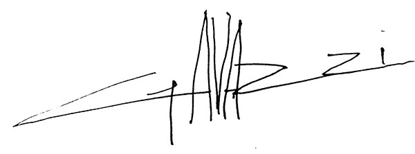
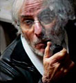

François GAVAZZI
Artiste Peintre




Issu de l'école des Beaux-Arts de Marseille où il étudie particulièrement le dessin, il travaille dans la publicité et fait des illustrations pour la bande dessinée en s'appuyant notamment sur les scénarios de son frère cadet Georges Gavazzi.
Au début des années 70, il décide de se consacrer entièrement à la peinture. Ses premières toiles sont exposées en 1975. Lumière et chaleur dans des silhouettes de constructions au centre d'un plan vierge et coloré, ambiance ensoleillée où l'on peut imaginer le chant des cigales et le bruit des vagues, généreux dans la matière, il devient une tête de file de la peinture provençale actuelle. Peintre senior, il décide récemment de retrouver une nouvelle jeunesse en arborant la monochromie et se consacre aujourd'hui à l'art du portrait.
Faut-il peindre ce qu'il y a sur un visage ?
Ce qu'il y a dans un visage ?
Ou ce qui se cache derrière un visage ?Pablo Picasso
François Gavazzi graduated from "l'École des Beaux Arts" (School of Fine Arts) where he mainly studied drawing. Afterwards, he worked in advertising and in illustrating comics, getting his inspiration specially from Georges Gavazzi's, his younger brother, scenarios.
In the early 70s he decided to dedicate himself solely to painting. His first paintings were exhibited in 1975. Light, heat and sunshine outline the frame of buildings standing in the middle of a colourful panel in which the onlooker can hear the ciccadas singing ot the noise of waves crashing. He has become the leader of the current Provençal painting.
Being now a senior, he has recently decided to refresh his talent by turning to monochromy and is now entirely devoted to the "Art of Portrait making".
Is it necessary to paint what is on a face ?
or whats hidden behind the facial features ?Pablo Picasso